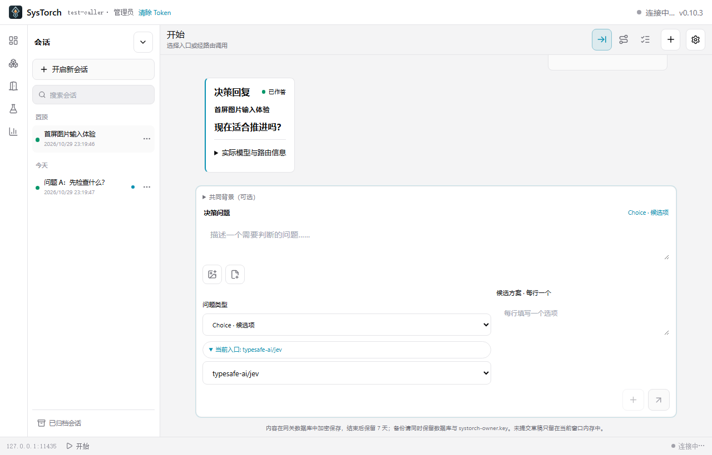
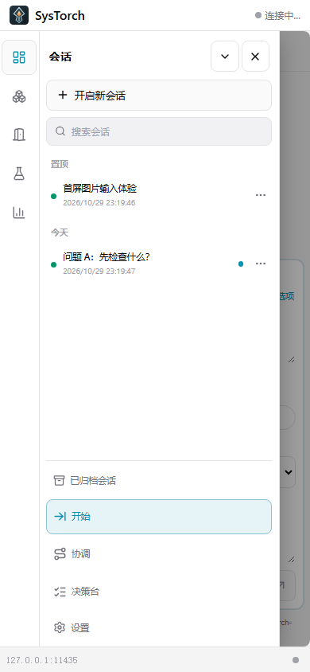

提交判断
人、Agent 或 Harness 带着结构化问题调用一个入口。
 SysTorch
SysTorch
从请求到可取回的答案
不是把模型藏在一个黑盒按钮后面。SysTorch 保留调用入口、路由尝试、人工接手和最终回复之间的关系。
人、Agent 或 Harness 带着结构化问题调用一个入口。
可编辑路径连接决策服务；边上的辉光映出真实请求与响应。
任务持久等待；人明确作答后，原调用方回来取回结果。
一个运行时，两种工作面
面向普通用户的「开始」与面向维护者的图、配置、统计和调试工具相互连通，但各自保持清楚的工作节奏。
结构化问题、多题消息、加密会话，以及持久人工作答。调用者退出后，仍可使用同一身份取回答案。
入口、内部路径和提供商出口清楚相连。失败重试和成功路径不再混成一个难以解释的结果。
可控的本地服务可以定义启动、停止与状态探查；云端服务继续由提供商管理。
调用方与人工操作共享明确的权限、原子写入和任务归属边界。
Jev / System One 是协议与模型系列；SysTorch 是独立产品。核心工作流不需要通用 LLM API。
界面预览


界面预览采用合成数据，不代表模型输出质量；预发布版仍需人工验收。
下载当前版本 · —
获取 Windows x64 Standalone 或 Android arm64 APK。每个发行页会列出该版本实际提供的附件和验收边界。
Windows EXE 暂无 Authenticode 签名；Android 保留原安装身份以支持稳定签名覆盖升级。